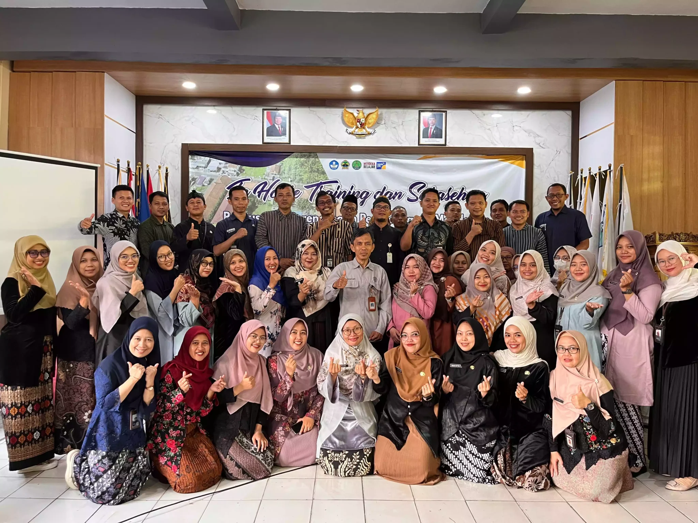

01 JUNI 2026
Informasi SPMB Jawa Tengah
Informasi mengenai Sistem Penerimaan Murid Baru dan persiapan pendaftaran peserta didik.
Baca SelengkapnyaInformasi dan kegiatan terbaru sekolah.
Ikuti berbagai kegiatan dan informasi terbaru dari SMK Negeri 1 Kutasari.
Informasi mengenai Sistem Penerimaan Murid Baru dan persiapan pendaftaran peserta didik.
Baca Selengkapnya
Kegiatan peningkatan kompetensi guru dan tenaga kependidikan melalui kegiatan pelatihan.
Baca Selengkapnya
Informasi mengenai prestasi siswa dalam ajang Festival dan Lomba Seni Siswa Nasional.
Baca SelengkapnyaBerbagai kegiatan pembelajaran dan pengembangan karakter peserta didik di lingkungan sekolah.
Baca SelengkapnyaKegiatan pembelajaran praktik dan teori sesuai kompetensi keahlian.
Baca SelengkapnyaBerbagai kegiatan untuk mendukung pengembangan minat, bakat dan prestasi peserta didik.
Baca Selengkapnya